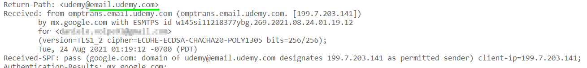

Mail Headers
We can find other hosts if we send an email to the target domain and then check the email metadata for other Domains/IP addresses
To receive an automatic email we can:
• send a mail to a non-existing email address @yourtarget.com. If the delivery fails, you should receive back a notification
• subscribe to the newsletter
• create an account
• use the function “forgotten password”
• order something
• ...
Go to the email received and "Show Original

Check for the value of
Return Path header
The Ip address of the domain found could be a papable Real Target Ip address